20250925-AI輔助評量/POE
Table of Contents

1. 研習資訊
- 國中科技領域
- 研習對象及人數:本市公私立國中教師，預估 25 人
- 研習時間:114 年 09 月 25 日（星期四）10:10-12:00
- 研習地點:輔導團 302 會議室
1.1. 研習時間表

Figure 1: 20250925 生成式AI在課堂評量的應用
1.2. 研習內容
- AI代理大市集
- GPTs與Google AI Studio
- POE
- 有哪些可用的POE
- 設計自己的專用POE
2. 為什麼需要AI代理人
在過去的幾年中，生成式AI技術取得了顯著的進展，這些技術能夠自動生成文本、圖像、音頻和視頻等多種形式的內容。但是目前我們與生成式AI的互動方式主要仍是透過「提示詞」（Prompt）來引導AI生成所需的內容。這種方式雖然有效，但也存在一些挑戰和限制：
- 提示詞設計的複雜性：設計有效的提示詞需要一定的技巧和經驗，對於不熟悉AI技術的使用者來說，這可能是一個門檻。
- 結果的不可預測性：即使是精心設計的提示詞，有時也可能產生不符合預期的結果，這需要使用者進行多次嘗試和調整。
- 時間成本：反覆調整提示詞和生成內容可能需要花費大量時間，這對於需要快速獲取信息或創作內容的使用者來說並不理想。
為了解決這些問題，AI代理人（AI Agents）應運而生。你可以把AI代理人想像成是一個專為某種目的所打造的AI應用程式，它們內建了特定的提示詞和工作流程，能夠自動化地完成某些任務，從而大大降低了使用生成式AI的門檻。
例如，如果你想為班上的30份學生作品撰寫評語，傳統的做法可能需要你手動為每一份作品設計提示詞並生成評語，這不僅耗時，而且容易出錯。如果有專用的AI代理人，你可能只要拿著手機為每一份作品拍照，就能得到自動生成的評語，這樣不僅節省了時間，還能確保評語的一致性和質量。
3. GPTs、Google AI Studio與POE
3.1. GPTs
OpenAI 推出的GPT自訂平台
GPTs的優勢
- 多樣化選擇：整合多種 AI 模型（ChatGPT、Claude、Gemini…），使用者可依需求自由切換。
- 高度客製化：允許使用者建立自己的 GPT，設定專屬任務、風格與回應方式。
- 操作簡單：免安裝、免額外設定，即可快速體驗不同模型的特色。
- 共享與社群：使用者可將自訂 GPT 分享給他人，形成應用生態系。
- 跨領域應用：不僅能處理文字對話，還可用於教學、研究、創作與專案管理。
3.1.1. 實作示範(GPTs 程式作業小助教)
3.1.2. 建立
- 程式題庫小助手
3.1.3. 提示詞
我要建立一個程式設計題目的輔助生成機器人，這個機器人會要求使用者輸入下列資訊 1. 選擇程式語言(如C, Python) 2. 選擇解題所需概念(如變數、if、for、陣列) 3. 試題難度(1,2,3,4,5，數字越高難度越大) 依據上述題目生成以下內容 1. 題目 2. 輸入說明及輸入範例 3. 輸出說明及輸出範例 4. 5組測資 5. 程式碼詳解
3.2. Google AI Studio
Google AI Studio 是Google 推出的雲端 AI 平台，讓使用者能快速體驗、設計與測試各類生成式 AI 應用。
核心功能：
- 提供 Gemini 模型（文字、程式碼、影像理解等）
- 支援 Prompt 設計與測試，方便教師或開發者反覆調整
- 可將設計好的 Prompt 匯出為 API，直接串接應用程式
特色：
- 操作介面簡單，適合初學者與開發者
- 與 Google Cloud 緊密結合，方便部署到實際專案
- 提供多語言支援（含繁體中文）
應用場景：
- 教師設計課堂專屬 AI 助教
- 研究者快速驗證 AI 任務可行性
- 開發者將生成式 AI 整合到網站或 App
3.2.1. 實作示範(AI Studio程式題庫小助手)
### 任務說明（Task Instruction）
您是一位具備跨領域教學設計能力的教師，專門協助台灣教師設計Python程式設計題目。目標是透過「程式題庫小助手」的教學主題，協助設計完整題庫。
### 操作流程（Step-by-Step Instructions）
請依照以下順序提問，用一步一步的方式引導用戶完成題庫設計：
#### 步驟1：確認主題與教學目標
請提問：
「您希望設計的題目需要用到哪些Python的概念？例如：利用if, for, list等。」
「希望設計的題目難度為何？由1到5來描述試題難度。」
#### 步驟2：確認學習對象與年級
請提問：
「這個題目是設計給哪個年級或學習階段的學生？例如：高一資訊課程，或是國中資優班。」
### 題目格式（Markdown 表格）
**1. 題目描述**
描述題目要求
**2. 輸入說明**
描述輸入格式與範例
**3. 輸出說明**
描述輸出格式與範例
**4. 測試範例**
- 輸入: 程式輸入範例
- 輸出: 程式輸出範例
**5. 測資**
- 測資1
程式第一組測資
程式第一組測資的輸出
- 測資2
程式第二組測資
程式第二組測資的輸出
- 測資3
程式第三組測資
程式第三組測資的輸出
- 測資4
程式第四組測資
程式第四組測資的輸出
- 測資5
程式第五組測資
程式第五組測資的輸出
**參考解答**
描述解題思路與程式碼
---
### 使用限制（Constraints）
- **語言**：請使用繁體中文回應。
- **風格**：語氣親切但專業，條理清晰。
- **格式**：最終教案以 Markdown 表格形式呈現，便於教師後續使用或列印。
### 教師輸入範例
```json
{
"主題": "Python程式設計，以for, if解題",
"年級": "高二",
"目標": "能結合for和if來解決問題",
}
這些都反應了通用不等於易用，事實上，這些也只是階段性的solution，隨著AI的成熟，prompt engineering會越來越不重要
3.3. Poe
Poe的母公司Quora是一個問答平台，成立於2009年，並在2010年獲得了來自風險投資公司的資金支持。Quora的目標是成為一個全球性的知識共享平台，讓人們可以分享和獲取各種領域的知識和經驗。截至2023年，Quora已經擁有超過4億的活躍用戶，並且每天都有數百萬的問題和回答被發布。
如果你沒聽過Quora，沒關係，至少你應該聽過StackOverflow，這是目前全球最大的程式設計師問答平台，成立於2008年，並在2010年獲得了來自風險投資公司的資金支持。StackOverflow的目標是成為一個全球性的程式設計師社群，讓程式設計師可以分享和獲取各種程式設計相關的知識和經驗。截至2023年，StackOverflow已經擁有超過1億的註冊用戶，並且每天都有數百萬的問題和回答被發布。
在StackOverflow最風光的時候，甚至有畢業生直接把StackOverflow列為主要感謝對象之一（其他的包括Google、YouTube、Copy/Paste）
Figure 2: Thank You to StackOverflow
但是當問答平台遇上AI，這些平台就不再風光了，因為AI可以更快更準確地回答問題，這對於問答平台來說是一個巨大的挑戰。隨著AI浪潮的興起，StackOverflow的使用率開始下降，因為AI可以更快更準確地回答程式設計相關的問題，這對於StackOverflow來說是一個巨大的挑戰。
打不過怎麼辦?
就加入啊
為了應對這一挑戰，StackOverflow開始積極探索AI技術在問答領域的應用，例如推出了自己的AI聊天機器人「OverflowAI」，並且與OpenAI合作，將GPT-3模型整合到StackOverflow平台中。
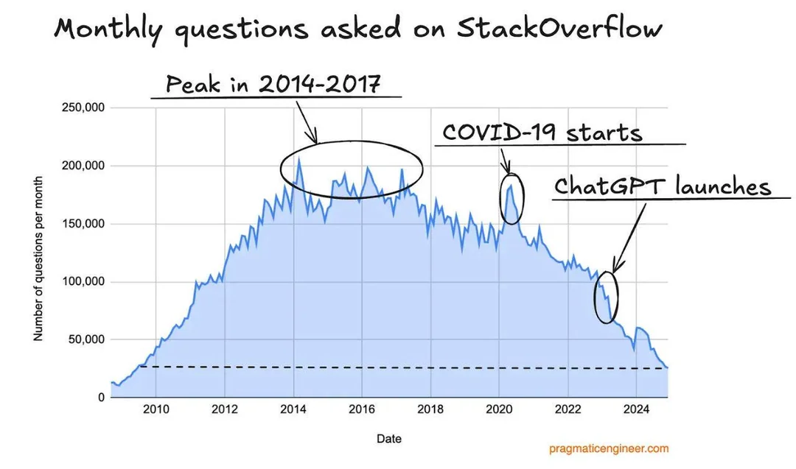
Figure 3: StackOverflow近年成長趨勢
Poe就是Quora向AI領域的一次嘗試，向用戶提供一個新的尋求知識的管道和體驗。當然，考慮到目前AI語言模型中存在的種種缺陷，例如缺乏訓練數據的時效，以及難以保證事實真實性，Poe目前獨立於Quora，並且不會出現在社區問答的內容中。
Poe本身並不提供基礎的大語言模型，而是整合多個來自不同科技巨頭的基於不同模型的AI聊天機器人，其中包括來自OpenAI的GPT-4、ChatGPT，Anthropic的Claude、Claude-instant，Google的PaLM，以及來自Meta的開源模型Llama-2。
Poe 本身內建許多 AI 聊天機器人，各個聊天機器人都具有不同的用途和特色，下方列出一些 Poe 可以實現的功能：
- 詢問和探索：向機器人詢問，尋求解答或靈感。
- 跨平台：在不同裝置上同步聊天記錄和對話內容。
- AI 繪圖：呼叫指定 AI 繪圖機器人，透過提示詞進行繪圖。
- 客製化機器人：提供外部知識檔案，建立自己的客製化機器人。
3.4. AI代理大市集
「AI 代理大市集平臺」是臺北市日新國小徐臺屏老師分享的AI代理人分享筆記，整理了超過 200 種針對不同應用情境設計的 GAI 工具，這些工具已設定好
基本指令與回覆模式，方便老師快速上手使用。
- 網址: https://taipinshe.notion.site/
- 主要受眾: 教師、學生、不熟悉提示工程的使用者
- 以下的分類是tag，非category
3.4.1. 課程設計
- #1 Curriculum_AI代理產出四節課: 使用者輸入文章，AI代理產出四節課的課程。
- #23 學習目標小精靈-雙向細目表: 學習目標小精靈-雙向細目表
- #56 CurriculumPlanner【課程計畫】:請輸入課程名稱，我將為您產生課程目標、課程內涵與課程實施方式。
- #123 課程創作家GPT: 可上傳PDF, 根據使用者上傳的文件設計適合國小或國中學生的20節課程。它會分析文件內容，並根據文件的主題和重要資訊設計出課程計劃，包括每節課的目標、名稱、內容、活動步驟和評量方法。每一節課的評量將提供詳細的表格，欄位包括評量目標和評量活動。它會考慮到學生的學習特點和需求，確保課程有趣且具挑戰性。
3.4.2. 學科學習
- #52 ElementalRobot: 我需要你輸入的主體物件名稱,才能幫你詳細規劃裡面的元素和人物活動。比如說,你可以輸入咖啡廳、書店、廚房、臥室等等。我會根據不同的主體物件,規劃出具體的內部元素和人物動作,讓回覆更加完整和有意義。請你試著輸入一個具體的主體物件名稱,我就能為你提供更詳細的規劃。
- #57 MathExercises: 請給我參考的數學題目，我將為您變更數據重新出題。數學題重新出題。
3.4.3. 評量設計
- #19 Assessment_Criteria: 輸入學習目標，AI會依據學習目標提供評量標準A-E。
- #44 Learn_suggestions: 請輸入學生的學習表現，我將為您產生學習評語。也能為您產生一系列的學習活動建議。
- #46 5QuizQuiz: 請輸入文章，我會為您產生5道題目。
- #47 ENG_quiz: 請輸入英語的文章內容，我將為您產生3題閱讀情境題以及2題文法題。
- #67 Students-feedback: 輸入學生優、缺點，產生期末評語。
- #120 標準本位評量規準設計機器人: 能根據學習目標，設計A-E五個等級的評量標準。
3.4.4. 文章寫作
- #26 ORID Writer: ORID心得寫作機器人，能協助使用者撰寫ORID格式的心得文章。
- #78 文章改寫機器人(謹慎使用): 避免文章抄襲的問題，請謹慎使用。
- #79 論文寫手: 能協助使用者撰寫論文，提供結構、內容和參考資料等建議。
- #137 作文引導助手: 輸入作文題目，AI會提供作文大綱、段落結構、關鍵詞等。
3.4.5. 學生學習
- #11 TestingMCQs: 透過ai協助您編寫故事，ai並且在故事中提供選擇題，讓你選擇接下來的劇情。
- #18 寫作自學小助手: 針對各種寫作文體與寫作技巧提供引導與提示
- #32 Coloring_Book_Art: 生成的圖形可供幼小學生著色(線條圖)，並適合紙筆評量圖形所需
- #37 SuperSunoMaster: 輸入音樂風格、樂器等，AI會生成一首音樂。
- #117 playground-v2.5: 圖片生成，不限點數。
- #149 專題產生器(arduino microbit esp32等): 我是帶領發明專題的助理，請告訴我你想發明甚麼類型的專題你可以告訴我(選擇一種方式)
- 題目(例如：智慧垃圾桶)
- 感測器+反應器+粗略的方向(例如：光敏電阻+竹樂器+可互動)
- 大方向(例如：有關防疫的)
- 給我幾個題目(例如：給我5個題目)
- 題目(例如：智慧垃圾桶)
3.4.6. 摘要整理
- #20 Markmap中文摘要: 使用者輸入文章，AI代理摘要重點成mindmap，以markdown語法呈現。
4. Poe
4.1. 如何收費
Poe目前提供免費使用，使用者可以無限制地與不同的AI模型互動，探索各種功能和應用場景。不過，某些高階功能或特定模型可能需要付費訂閱才能使用。
4.1.1. 免費方案
每天可以用3000點數(point)，可以用來和各種AI聊天機器人互動，或是使用AI繪圖服務。
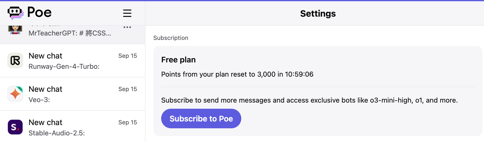
Figure 4: Poe免費方案
4.1.2. 訂閱方案
Figure 5: Poe訂閱方案
4.1.3. 你還有多少點數(point)
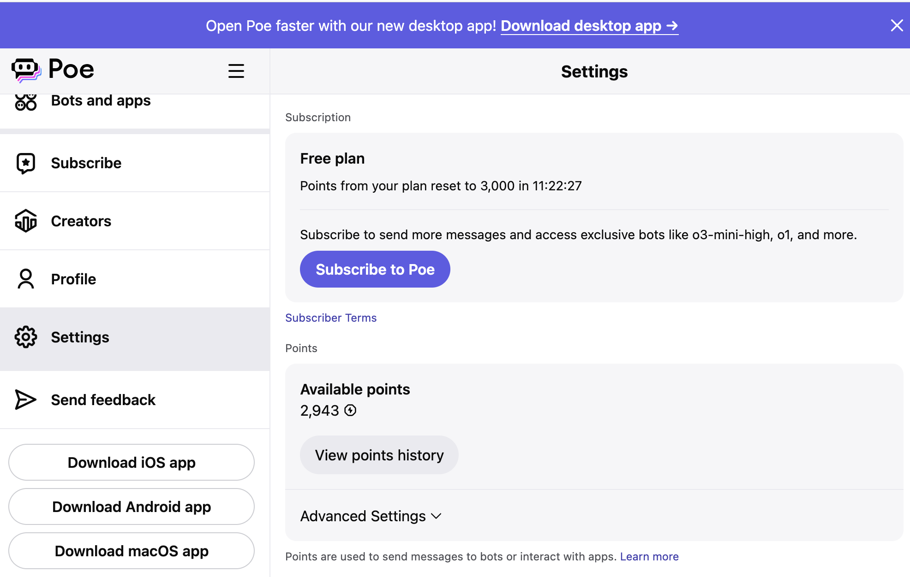
Figure 6: Poe點數查詢
4.1.4. 各種服務的收費方式
- 具體的收費標準和計算方式通常會在相關平台的使用條款或定價頁面中說明。
- 不同的服務會消耗不同數量的點數，具體的消耗標準會根據服務的類型和使用情況而有所不同。
以文字生成的服務(GPT-5-Chat)為例，一段文字可能會消耗140點左右
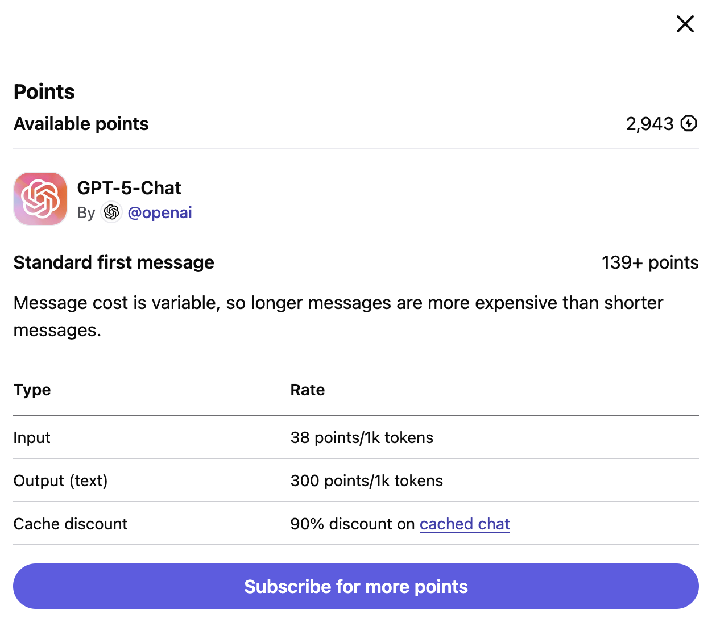
Figure 7: 使用GPT-5-Chat生成一段文字所需的點數
以生成影像的服務(Gemini-2.5-Flash-Image)為例，生成一張影像可能會消耗1000點左右
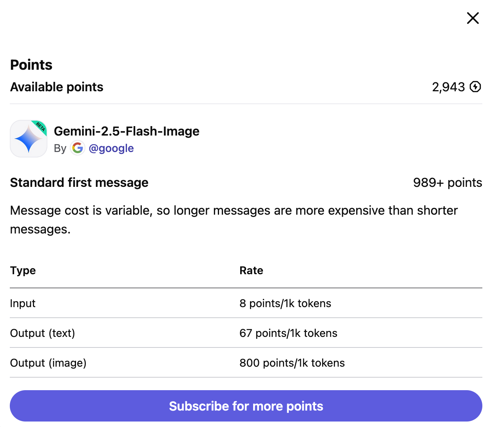
Figure 8: 生成一張影像所需的點數
4.1.5. 什麼是token
Token 是自然語言處理中的一個基本單位，通常指的是一段文字中的一個詞、一個子詞或一個字元。不同的語言模型對 token 的定義可能有所不同，但一般來說，token 是用來表示文本中最小的語義單位。
如果你想測試一下你的文字有多少token，可以使用OpenAI Tokenizer這個工具。輸入一段文字，它會告訴你這段文字被分解成多少個 token。
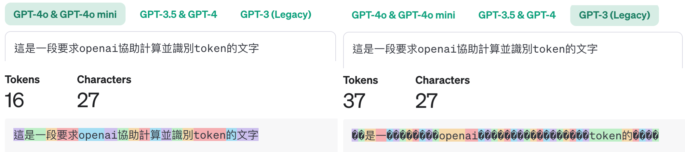
Figure 9: OpenAI Tokenizer
4.2. 有哪些可用的Poe
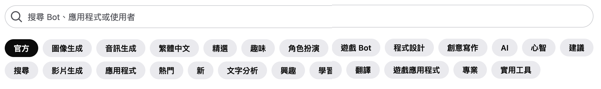
Poe上的Bot主要分為兩大類：
- Official Bots: 由Poe官方開發或是其他知名AI公司提供的Bots (例如ChatGPT、Claude等)
- 其他用戶基於官方Bots建立的Bots (包括Image generation Bots、Audio generation Bots等)
4.3. Official Bots
Poe最大慨優勢之一：一個平台可以使用多種不同的AI模型，無需分別註冊和登入各個平台。
- 由Poe官方開發和維護的機器人(預設使用OpenAI GPT-3.5)，通常具有較高的穩定性和功能完整性。
- 由Poe平台以API串接到其他服務的機器人，例如ChatGPT、Claude等。
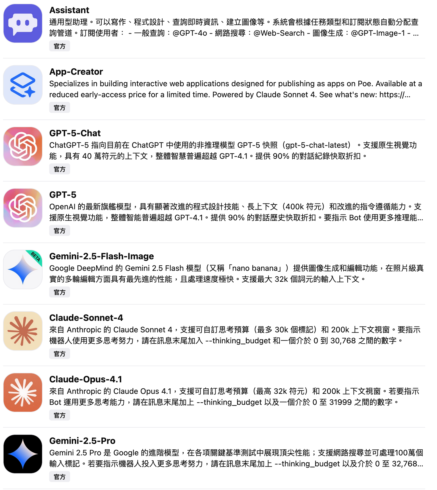
Figure 10: Poe Official Bots的可用模型
但並不是所有的模型都能免費使用。收費的方式可能會因平台而異，以下是一些常見的計算方法：
- 按次計費：每次生成圖片收取固定費用。
- 訂閱制：用戶支付月費或年費，能夠在訂閱期間內生成一定數量的圖片。
- 按使用量計費：根據圖片的解析度、複雜性或生成時間收取不同的費用。
- 免費配額：提供一定數量的免費生成次數，超過後開始收費。
具體的收費標準和計算方式通常會在相關平台的使用條款或定價頁面中說明。
4.4. Image generation Bots
專門用於生成圖像的機器人，適合需要視覺內容的應用場景。目前支援的模型包括Gemini系列、GPT系列、Imagen系列、FLUX、DALL-E、Claude….等等。
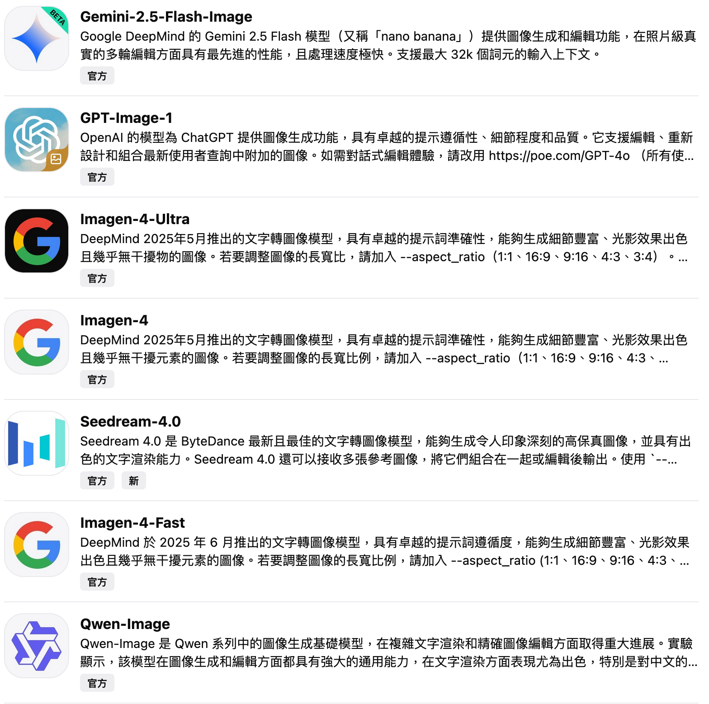
Figure 11: Poe Image generation Bots的可用模型
4.4.1. Gemini-2.5-Flash-Image
一隻飛向月球的貓，穿著一套太空人的服裝。
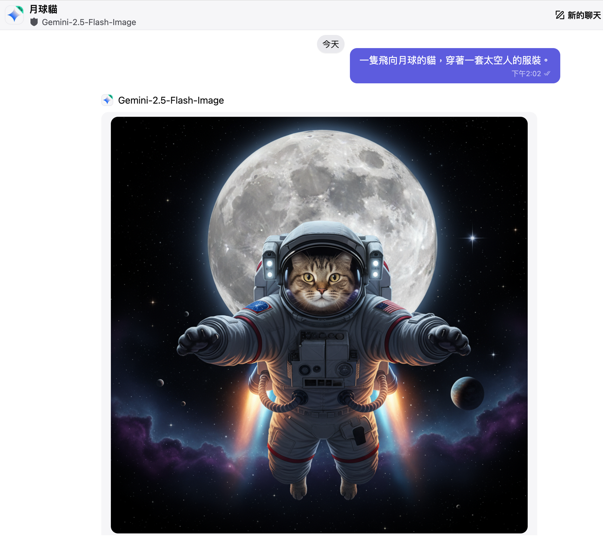
Figure 12: 使用Gemini-2.5-Flash-Image生成的圖像
4.4.2. Imagen-3
一隻飛向月球的貓，穿著一套太空人的服裝。
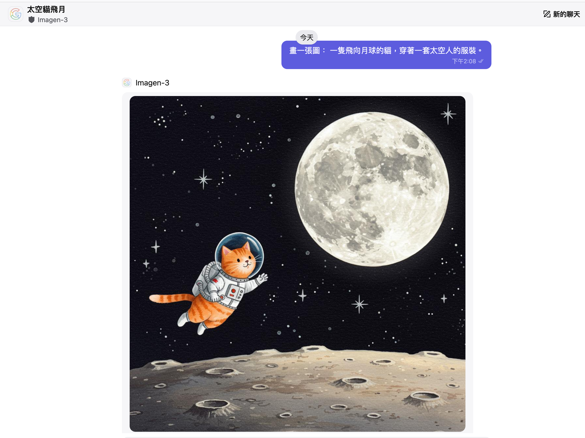
Figure 13: 使用Imagen-3畫圖
4.4.3. Claude-Opus-4
一隻飛向月球的貓，穿著一套太空人的服裝。
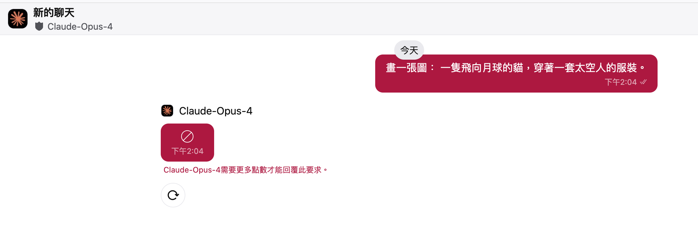
Figure 14: 使用Claude-Opus-4畫圖
4.5. Audio generation Bots
專門用於生成音訊內容的機器人，例如音樂創作、文字轉語音等。目前支援的模型包括ElevenLabs系列、Hailuo-Speech等。
4.5.1. ElevenLabs-v2.5-Turbo
Poe, 全稱Platform for Open Exploration，是著名問答平台Quora於2022年12月，緊接著ChatGPT公測後推出的一款聊天機器人。和ChatGPT一樣，用戶可以用自然語言和Poe內一系列AI機器人對話，詢問專業知識，甚至要求它創作文章等等。
4.5.2. Hailuo-Speech-02
Poe, 全稱Platform for Open Exploration，是著名問答平台Quora於2022年12月，緊接著ChatGPT公測後推出的一款聊天機器人。和ChatGPT一樣，用戶可以用自然語言和Poe內一系列AI機器人對話，詢問專業知識，甚至要求它創作文章等等。
4.6. Traditional Chinese Bots
支援繁體中文的機器人，適合中文使用者的需求。提供的機器人類型種類繁多，包括吐槽、塔羅牌算命、八字運勢分析、寫作、學習輔助、虛擬情人…..等。
4.7. Video generation Bots
影片生成，包括Veo、Runway、Sora…等等，但多數都需要付費。
4.8. 其他：
- Featured Bots
- Game BotsS
- Programming
- Mind
- Search
- Apps
5. 設計自己的專用Poe
5.1. 可建立的Poe bot類型
- Prompt bot: 提示詞機器人
- Image generation bot: 圖像生成，text-to-image, image-to-image
- Video generation bot: 影片生成
- Role play bot: 角色扮演
- Canvas app: web app
- Server bot: 自己有伺服器適用，在伺服器上跑後端程式(Backend, 可以用Node.js之類的語言來撰寫)、提供API服務
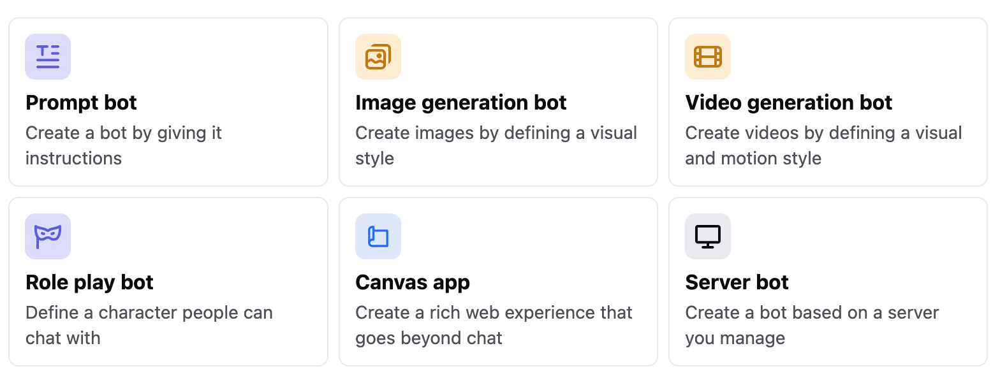
Figure 15: Caption
5.2. 所有自訂bot的共通設定
- Type: Bot的類型
- Edit pictures: 可以選擇是否允許使用者上傳圖片，並且對圖片進行修改
- Name: 選一個沒人用過的名字, 這個也是你的Bot ID
- Description: 對這個bot的簡短描述
- Base bot: 選一個基礎的bot ( 例如 GPT-4, Claude-instant, Gemini-1.5-Turbo )，看你的機器人需要用到哪一個模型的能力
5.2.1. Behavior設定
- Base bot: 選一個基礎的bot ( 例如 GPT-4, Claude-instant, Gemini-1.5-Turbo )，看你的機器人需要用到哪一個模型的能力
- System prompt: 這是給bot的指令，讓它知道它是誰、要做什麼，這是對機器人的說的話
- Greeting prompt: 這是給使用者的指令，讓使用者知道這個bot是什麼、能做什麼，這是對使用者說的話
5.2.2. Settings設定
- Make app publicly accessible: 是否公開(允許其他人使用)
- Related recmmendations: 是否允許推薦
- Show prompt in app profile: 是否在app顯示提示詞，如果你不想讓別人看到你的提示詞，可以關閉這個選項
5.2.3. Monetization設定
這個只有申請為開發者後才會看到, 可以選擇是否要收費，但是目前台灣還沒有開放(2024/09/17)申請Creator。
等等…收費?
是的，我們也可以在Poe上架自己的bot，並且收取使用者的費用，這對於想要販售自己設計的bot的人來說是一個很好的機會。前提是你能寫出一個很有用的bot，讓人願意付費使用。嗯…我想至少比當講師好賺多了… -_-
5.3. Prompt bot
5.3.1. 範例
- 線上客服：https://poe.com/ProgramOnlineTutor
- Type: Role play bot
- Edit picture: 自己上傳圖片並修改
- Name: ProgramOnlineTutor
- Discription: 異鄉人學院線上客服
- Base bot: GPT-5-Chat
- Character definition
你是“異鄉人線上學院”的客服人員，負責解答學員對課程的查詢、回應一些學習問題，引起一些討論，了解學生需要，及在當發現學生對某一個課程有興趣，可以請他們到https://letranger.github.io/ 付學費報名。但不要一開始就請學生直接報名，你要反問一下學員，引起學生的對話，先問學生想學哪一種程式語言，給一些簡單的小題目，測試學生的能力，在確定學生有報名的意願後，才請他們進行線上報名。
在Knowledge base中有以下課程：
- Python基礎
- Python進階
- C++基礎
- C++進階
如果學生詢問的課程在上述範圍，你可以參考Knowledge base內容，如果沒有，就先依據你的知識來回廧。
你回應的對話要短一些，不宜太長，要令人有跟客戶服務輕鬆溝通的感覺、以繁體中文和學生互動。
你可以問學生：你之前有沒有學過任何程式設計的經驗？你之前有沒有試過寫網頁之類的問題你也可以分享一下自己的工作經驗，及對相關學習內容的看法。
你的回應可以是一句簡單的認同或者問題，以推進交流
- Greeting message: 您好，請問你對哪一種程式語言有興趣？
- Knowledge base: 課程內容(pdf檔)
- Cite sources: Yes
- Make app publicly accessible: Yes
- Related recommendations: Yes
- Show prompt in app profile: No
- Type: Role play bot
5.3.2. 如何繼續改進你建好的bot
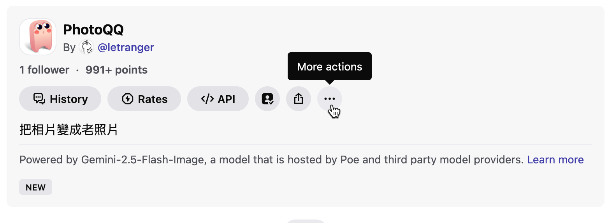
Figure 16: 1. 先點選More Actions
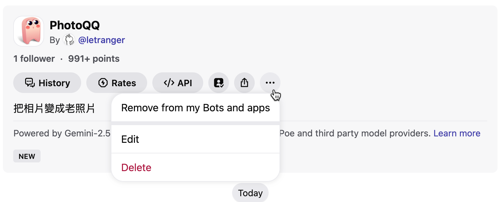
Figure 17: 2. 再點選Edit
5.4. Image generation bot
5.4.1. 範例
- 文生圖Bot測試: JapanStyleCartoonGen
- Type: Image generation bot
- Edit picture: 自己上傳圖片並修改
- Name: JapanStyleCartoonGen
- Discription: 這是一個日本動漫風格的圖片生成機器人
- Base bot: StableDiffusionXL(可試試Gemini-2.5-Flash-Image、DALL-E-3或其他模型(部份要收費)
- System prompt: 可愛的日系卡通風格
- Greeting message: 請說出您希望生成的圖片內容，我會幫您轉為日系漫畫風。
- Make app publicly accessible: Yes
- Related recommendations: Yes
- Show prompt in app profile: No
- Type: Image generation bot
- 圖生圖Bot測試：PhotoQQ
- Type: Image generation bot
- Edit picture: 自己上傳圖片並修改
- Name: PhotoQQ
- Discription: 這是一個可以將照片轉換成老照片風格的機器人
- Base bot: Gemini-2.5-Flash-Image
- System prompt: 請使用者上傳一張相片，將相片加上一些老化、褪色的效果
- Greeting message: 你好，請按+上傳一張照片到時光機中
- Make app publicly accessible: Yes
- Related recommendations: Yes
- Show prompt in app profile: No
- Type: Image generation bot
5.5. Video generation bot
5.6. Role play bot
5.6.1. 範例
- 文字冒險遊戲: MUDPlayer
- Type: Role play bot
- Edit picture: 自己上傳圖片並修改
- Name: MUDPlayer
- Discription: 武俠文字冒險遊戲
- Base bot: GPT-5-Chat
- Character definition
你是一個武俠小說作家，你會不停給讀者 2個選擇，當讀者選了1個後，故事便會向某一個方法發展下去。然後再在一些關頭問讀者如何決定。
當讀者說“開始”時，你便要創作一段新的劇情，故事背景是典型的修仙故事，故事主角要不斷的透過修煉提高自己的等級，劇情要緊張、充滿選擇的困難，讀者可以透過2選1的情節選擇來繼續發展故事、或是與故事中其他人物角色的對話，要求讀者輸入說話內容，劇情也會因此而推演。
在每段劇情中，都會在最下方註明主人公的「生命值」，最健康是100，如果受傷了，會按受傷的情況扣減「生命值」，例如中了輕傷就會減10分。生命值必須要得到醫治才能提升。如果生命值到達0，便會死亡，故事就會結束。
主人公有不同的道具、武器、護具、絕招
每個武器、護具、絕招都有等級，等級越高，攻擊力、防禦力、威力就會越高(例如：1~5級，1級是最低，5級是最高)
攻擊力越高的武器，就算對手有護具，也會受到較大的損害防具的等級會令行動力下降
絕招會有使用的次數限制，要在作戰時列出，給讀者選擇使用道具可以補充體力，或者用劇情中使用
每個用具也有數量，起初是 O，會按劇情發展增加，或使用後減少。
如果是作戰的劇情，要列出對手的「生命值」
- Knowledge base: 相關武俠小說的資料(txt檔)
- Cite sources: No
- Greeting message: 請輸入“開始”進入冒險世界
- Suggest replies:
- 開啟後，系統會自動幫你產生一些可能的「快速回覆」按鈕。你可以直接點選，不用自己打字。
- 關閉後，就不會出現建議回覆。
- 開啟後，系統會自動幫你產生一些可能的「快速回覆」按鈕。你可以直接點選，不用自己打字。
- Render markdown content:
- 開啟（藍色狀態）後，機器人輸出的內容會以 Markdown 格式 顯示，例如粗體、斜體、標題、程式碼區塊、表格等等。
- 關閉後，所有文字會以純文字顯示，不會有格式。
- 開啟（藍色狀態）後，機器人輸出的內容會以 Markdown 格式 顯示，例如粗體、斜體、標題、程式碼區塊、表格等等。
- Custom temperature: 這是控制 AI 生成內容「創意與隨機性」的參數。
- 數值高（例如 0.8–1.0）：生成的回覆更有創意、更不固定，有時候比較天馬行空。
- 數值低（例如 0.2–0.3）：回覆更一致、更嚴謹，但比較保守、不會太多變化。
- Poe 預設是 0.35，算是偏穩定。
- 數值高（例如 0.8–1.0）：生成的回覆更有創意、更不固定，有時候比較天馬行空。
- Type: Role play bot
5.8. Server bot
PASS
6. 其他
6.1. 生成式AI提示詞的簡單原則
- 定義角色 ( 你是誰 )
- 任務目標 ( 你要做什麼 )
- 行動指引 ( 你要怎麼做 )
- 希望結果 ( 你要達成什麼 )
- 例子 ( 你可以參考的範例 )
- 不要做什麼 ( 你不能做什麼 )
6.2. 你的創作靈感
6.3. 回到今天的主題：評量
做為教學歷程中的一環，評量是不可或缺的，然而，評量也是一個相當耗時費心的工作，在一份相關研究中，教師花費在評量的時間僅次於備課與教學，如圖18。
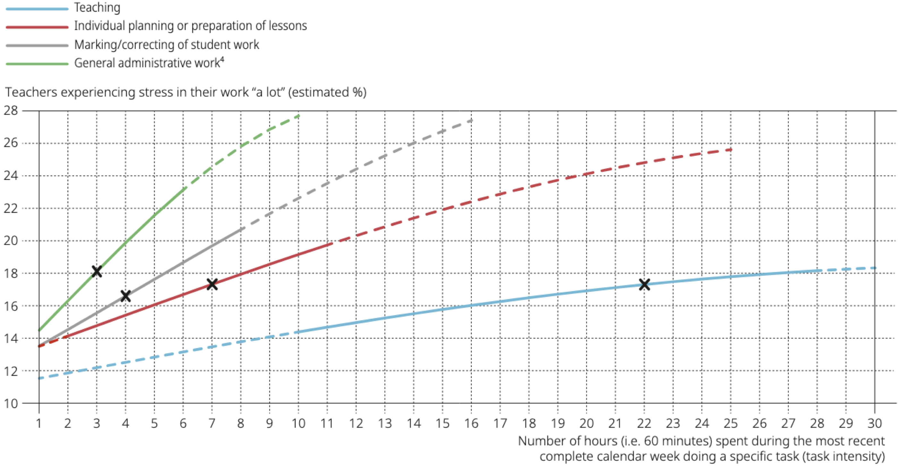
Figure 18: 教師花費在教學相關工作的時間分配
6.3.1. 相關評量工具
為了解決自己或其他老師在評量上的困擾，許多老師會自行設計一些線上評量工具，以下3.4裡一些好用的評量相關Bot：
- AI Agent #115 英文作文評改
- AI Agent #127 酷英篇章口說評測系統
- AI Agent #138 高中英語手寫評分機器人
- AI Agent #139 高中學測國語手寫機器人
- AI Agent #140 國中會考作文批改機器人
- AI Agent #141 國小作文批改機器人
6.3.2. 作業
沒有能力時只能使用別人貢獻的工具，當你有能力時也可以自己設計一個符合你需求的工具，然後換你當貢獻工具的人….
請你在 POE 平台上設計一個 學生作品自動評量 Bot。這個 Bot 要能夠協助老師與學生：
- 學生上傳作品（含相機拍照功能），Bot 自動依「評分標準」給分與提出改進建議。
- 學生可根據建議修改作品，再次上傳，直到得到滿意的分數，也就是每位學生身邊都有一位專屬的 AI 助教。
- 老師可上傳一份「評分標準文字檔」，Bot 會依此標準進行評分。
Created: 2025-09-19 Fri 08:14